A step-by-step tutorial for easily prototyping interactive TV + remote prototypes in Framer.
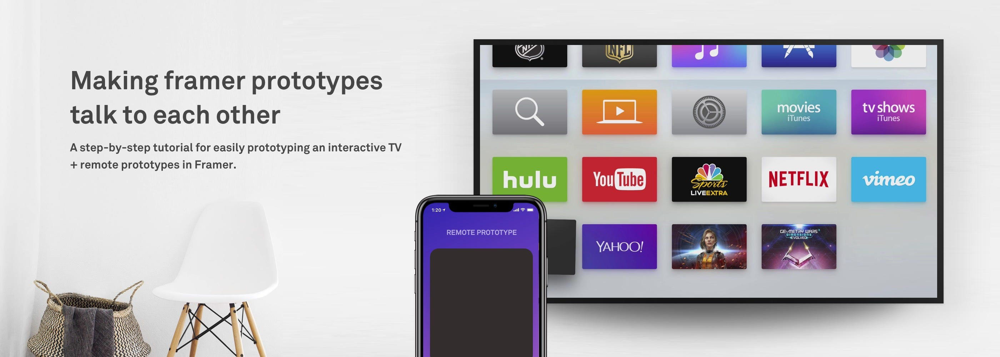
This piece was written for Framer Classic, the CoffeeScript-based tool, which has since been deprecated. The WebSockets approach still holds; the Framer specifics are of their time.
Framer has quickly become my main go-to tool for prototyping ideas, interactions and animations for my design work.
As a designer who stayed away from code, I felt that Framer does have a bit of a steep learning curve and I did drop off it a couple of times. But now I see the possibilities of what a designer can do once they are comfortable with it. It has also taught me different ways of approaching problems, thinking about the implementation as a part of the design process.
In this particular post, we are going to look at how to make two Framer prototypes talk to each other.
What's the need for prototypes to talk to each other?
If you are working on a product or company that has a set of apps and devices that form an ecosystem, it's very important to know the interaction model and possibilities occurring between these devices and apps.
Think Google or Amazon, with a range of devices and apps that usually work together and form an ecosystem. The continuity and seamless interaction between these devices forms the crux of the user experience.
To begin, let's have a look at all the elements that will be used in making the prototypes work and talk with each other. The setup consists of 3 main parts:
Apart from the basics in Framer, we will be making use of WebSockets: an advanced technology that makes it possible to open an interactive communication session between the user's browser and a server.
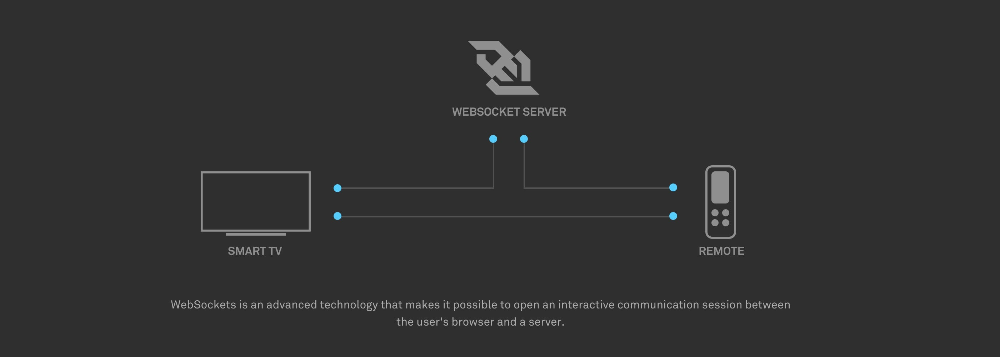
This prototype will behave as the TV. The primary job of this prototype is to listen to swipe gestures and handle the UI navigation accordingly.
Let's begin by creating some app icons that can appear on the TV home screen.
# Create app icons and build the TV UI in a container layer
container = new Layer
width: Screen.width
height: Screen.height
backgroundColor: "EAEAEA"
container.center()
# An array to hold all the app icons of the TV
icons = []
# Create app icons of the TV in a loop and push them onto the array
for i in [0...5]
icon = new Layer
width: 200
height: 200
x: (280 * i) + 60
y: 60
borderRadius: 6
backgroundColor: Utils.randomColor()
parent: container
icons.push(icon)Use the devices dropdown to enable the TV device in the Framer preview window. Once you write the above code, your result should look something like this:
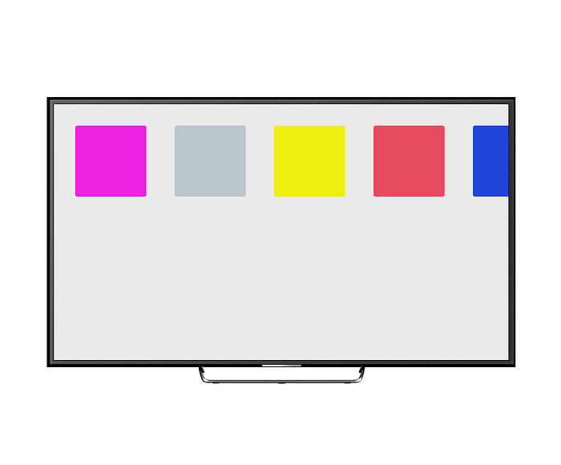
Now, let's create the focus and hover interaction that we usually find in most smart TV UIs these days. For this, we are going to make use of a Framer module rather than write the complete logic by ourselves. Think of modules as a library of code that we can import into our prototypes to automate certain tasks, like handling the UI focus interaction in our case.
We'll use the Focus Engine module by blackpixel. Copy the FocusEngine.coffee file and paste it in the '/modules' folder of your project. Next, we need to add the following line of code in Framer to include this module.
# Command to include the FocusEngine module in our TV prototype
fe = require "FocusEngine"Now that we have imported the module into our prototype, it needs to be fed with the app icon layers we created earlier to make them interactive.
# Initialize the focus engine with the app icons. All the layers that
# can be controlled with the remote need to be fed into the focus engine
fe.initialize(icons)
# Set the first icon to be on focus at the beginning
fe.placeFocus(icons[0])Once the FocusEngine is initialised, you should be able to see the first layer on focus, like this:
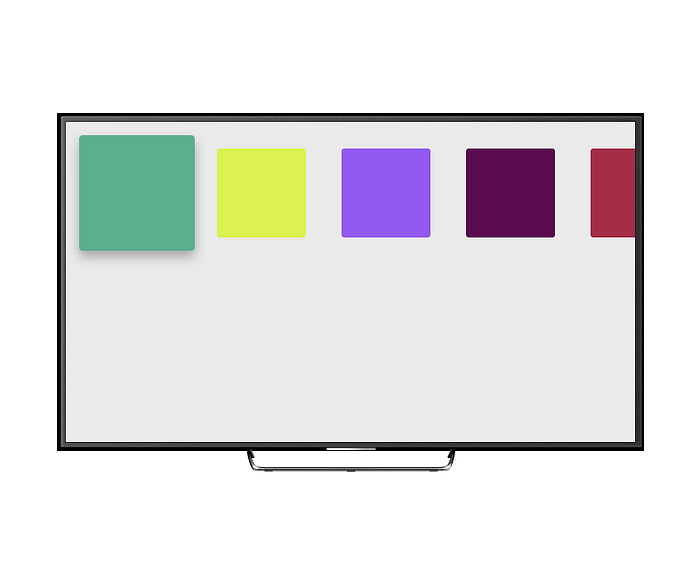
Next, we add the following code into our TV prototype. What this does is listen to swipe gestures and change the focus accordingly.
ws.onmessage = (event) ->
if event.data == "left"
fe.changeFocus("left")
else if event.data == "right"
fe.changeFocus("right")
else if event.data == "up"
fe.changeFocus("up")
else if event.data == "down"
fe.changeFocus("down")Our TV prototype set-up is done.
This prototype will be the remote control to the TV. Its main job is to enable a touch surface that will act as a remote control and pass the swipe gestures to the TV.
Create another Framer project and name it "remote-control". In this prototype we will be using the RemoteLayer module to create an Apple TV remote touch surface that can be used to send gestures to the smart TV prototype. This module handles the swipe gestures automatically for us.
Copy the RemoteLayer.coffee file and paste it in the '/modules' folder of your TV remote Framer project. Next, we need to add the following line of code in Framer to include this module.
# Command to include the remote control module in our remote prototype
RemoteLayer = require "RemoteLayer"Next, let's create a RemoteLayer instance and define some events and actions for when a user swipes on it.
# Create a remote control layer in a container layer and define the
# action it should do on swipes (left, right, up and down)
container = new Layer
size: Screen.size
backgroundColor: "EAEAEA"
myRemote = new RemoteLayer
parent: container
swipeUpAction: ->
ws.send("up")
swipeDownAction: ->
ws.send("down")
swipeLeftAction: ->
ws.send("left")
swipeRightAction: ->
ws.send("right")In brief, the lines ws.send("up/down/left/right") are sending the messages to the WebSocket server, based on the type of swipe. Once you do the above, your remote control prototype should look something like this:
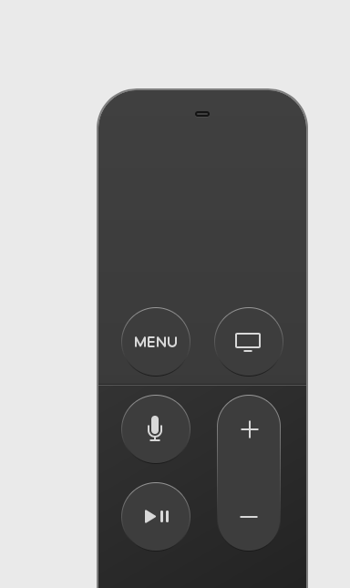
Awesome! Now that we have both the smart TV and remote control prototypes set up, we will look into connecting the two.
For this, we shall host a Node server on our local machine. You can download the npm package here and install it by following the instructions.
Next, open the terminal, navigate to the TV prototype folder and type the following command. This will create a package.json file that the Node server will use.
npm init --yes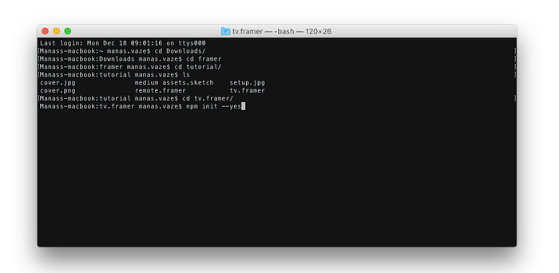
Next, we need to install express in the same folder, along with a couple of other dependencies. For WebSockets we'll install the ws module as well as bufferutil and utf-8-validate. Only ws is necessary, but the other two provide a performance boost.
npm install --save --save-exact express
npm install --save --save-exact ws bufferutil utf-8-validate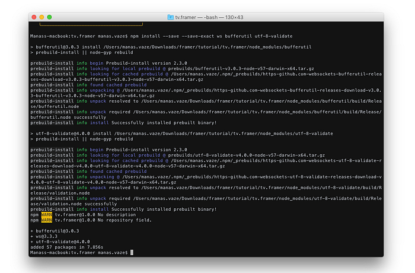
Next, create a new file in the same folder and name it server.js, as shown below.
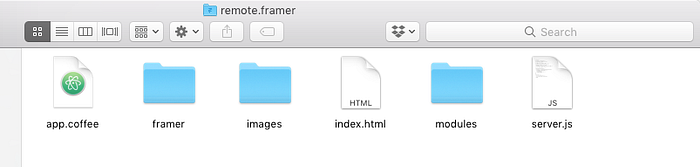
Now, open this file in your favourite text editor, paste the following code and save the file.
'use strict';
const express = require('express');
const SocketServer = require('ws').Server;
const path = require('path');
const PORT = process.env.PORT || 3000;
const INDEX = path.join(__dirname, 'index.html');
const server = express()
.use((req, res) => res.sendFile(INDEX))
.listen(PORT, () => console.log(`Listening on ${ PORT }`));
const wss = new SocketServer({ server });
wss.on('connection', (ws) => {
console.log('Client connected');
ws.on('close', () => console.log('Client disconnected'));
ws.on('message', function incoming(data) {
console.log(wss.clients.size);
console.log(data);
wss.clients.forEach((client) => {
client.send(data);
});
});
});In brief, the code here is creating a new Node/Express server and defining the path and other parameters for it. We also declare that we are hosting this locally and that the server shall listen on port 3000. Now, let's verify by running the server:
node server.js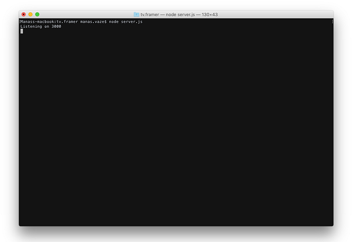
Congratulations! You have just set up a Node server locally and it's running fine. :)
The last step is to make the TV prototype listen to the remote control prototype. For this, we need to add some JavaScript in the index.html file of both the TV and remote control prototypes. Please note that this code has to go inside the <body> tags of the index.html file.
<script>
var HOST = "ws://localhost:3000";
var ws = new WebSocket(HOST);
ws.onmessage = function (event) {};
</script>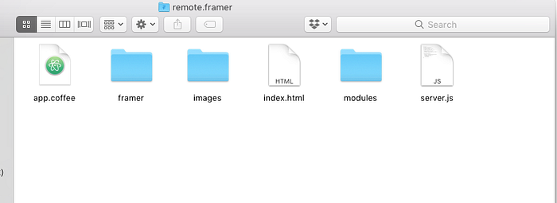
This JavaScript is creating WebSocket objects, and the function ws.onmessage() will send across the message, or swipe gestures in our case.
Hit refresh on both the TV and remote prototypes and you are ready to go! Our set of prototypes are connected and can start working together.
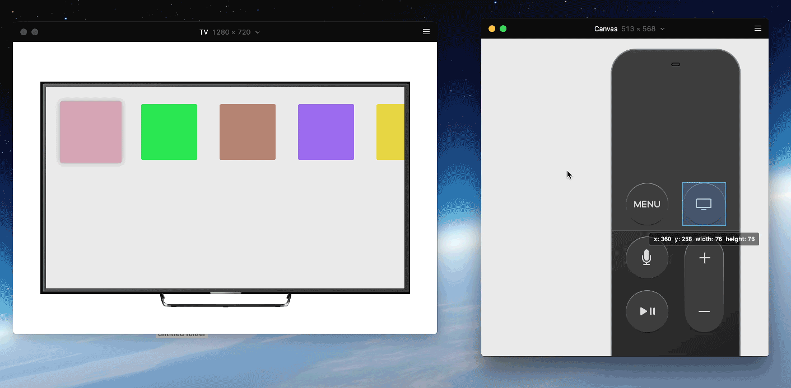
I hope you found this tutorial helpful in creating prototypes that can communicate with each other. This also opens up new ways to think about interaction between apps and devices. Excited to see what the community builds using Framer and WebSockets.
You can download the prototype files from here.
Special thanks to all the people on the Framer Slack channel that have helped me so far, including Sergey, Steve, nvh, Muhammad Athar and many more. This article was originally published in Framer's Medium publication in December 2017.